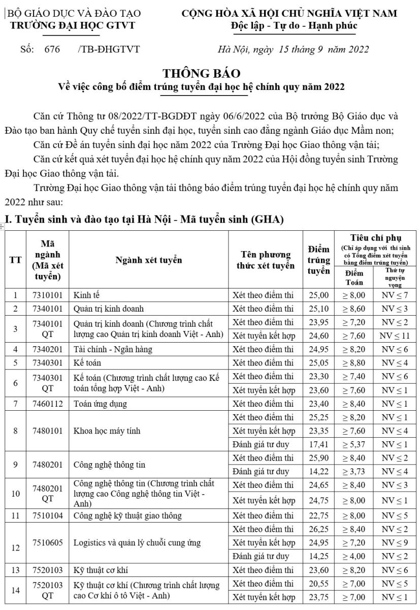
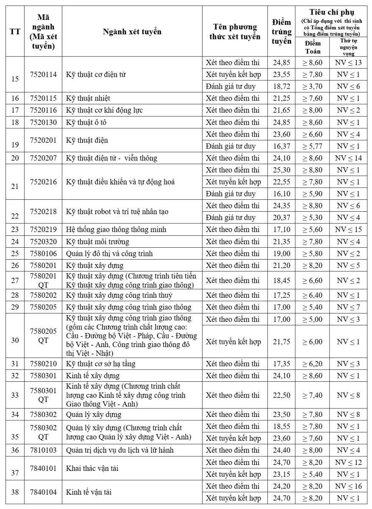
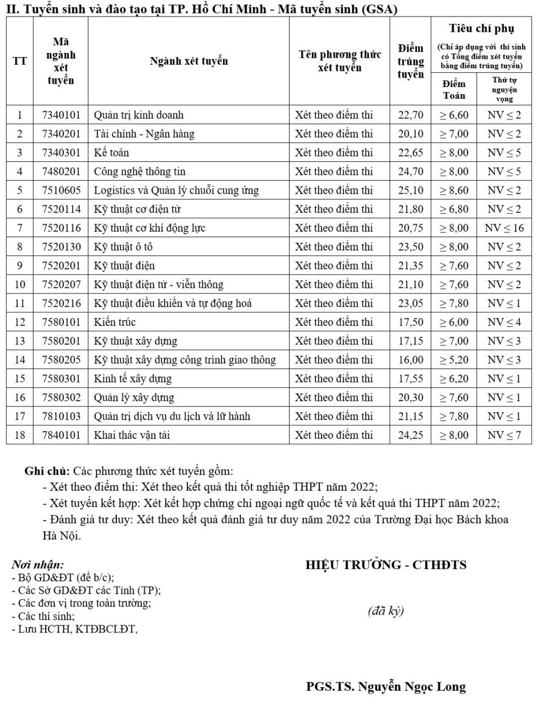

CÔNG BỐ ĐIỂM TRÚNG TUYỂN ĐẠI HỌC HỆ CHÍNH QUY NĂM 2022
Trường Đại học Giao thông vận tải thông báo điểm trúng tuyển đại học hệ chính quy năm 2022 như sau:



THÍ SINH LƯU Ý:
Tiêu chí phụ chỉ áp dụng với những thí sinh có tổng điểm xét tuyển vừa đúng bằng điểm trúng tuyển.
Vd: Với ngành kinh tế có điểm trúng tuyển bằng 25.00 nếu thí sinh được 25.01 điểm trở lên thì không cần quan tâm đến tiêu chí phụ !!!
Đính kèm: 1.676.pdf
Đăng bởi: quantm quantm